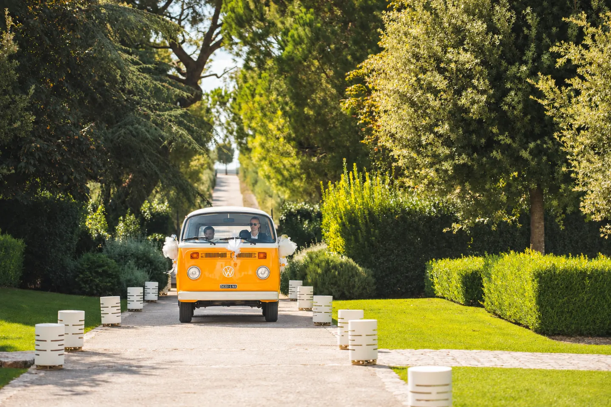
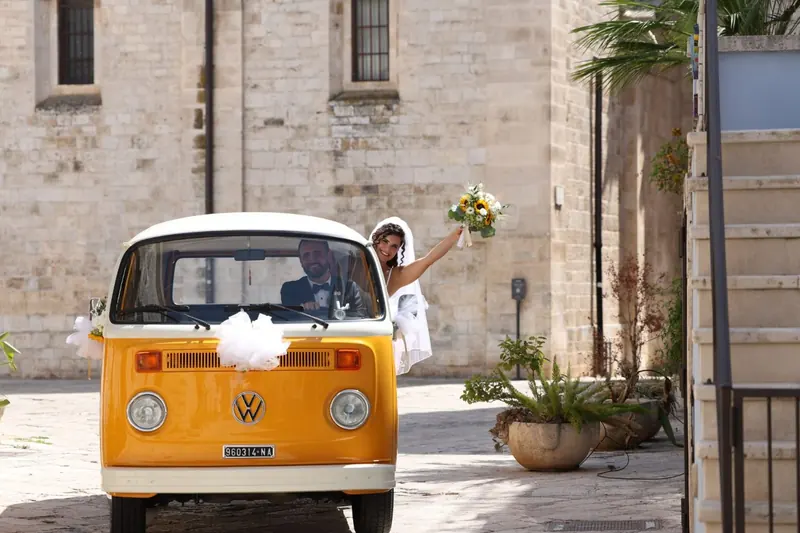

A ’74 Volkswagen. A day of your own.
Choose your experience
WEDDINGSSomething old.
Something yellow.
Your ceremony arrival, wedding party and a few photographs worth stopping for.
 PRIVATE TOURS
PRIVATE TOURSPuglia.
The scenic way.
Whitewashed towns, olive groves and a stretch of coast. We’ll drive.
 EVENTS & SHOOTS
EVENTS & SHOOTSBring in
the yellow one.
Private parties, photo shoots and brand events with a VW in the frame.
An original from 1974Up to eight passengersChauffeur-driven
STILL AT THE BACK-OF-A-NAPKIN STAGE?
That’s a good start.
Tell us what you have in mind, even if it’s only half a plan. We’ll help work out where the VW fits.